El lehendakari del Gobierno Vasco , Juan José Ibarretxe , acusó hoy al PP de " desprestigiar este país con tal de sacar un puñado de votos " y dijo que esta formación está detrás de la denuncia hecha ayer por el Foro de Ermua ante el Parlamento europeo.
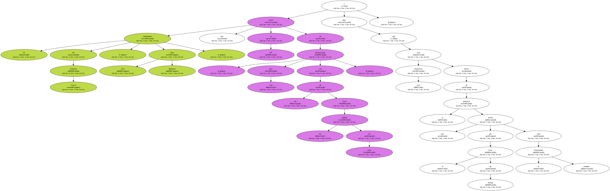Ibarretxe compareció ante el pleno del Parlamento Vasco para responder a una serie de interpelaciones y preguntas formuladas por el PP , el PSE-EE y UA a raíz del atentado que ETA cometió el pasado mes de enero en Madrid.
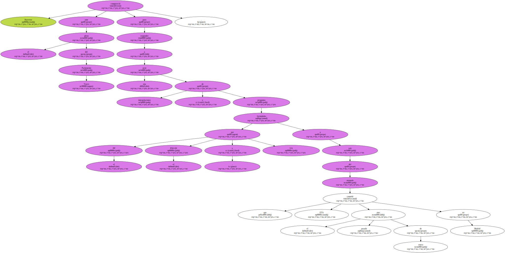La Cámara también aprobó hoy , con los votos de los grupos de la oposición , el rechazo del PNV y EA y la ausencia en las votaciones de EH , una iniciativa socialista en la que instan al Ejecutivo autónomo a " extremar " su actuación en la lucha contra la violencia callejera.
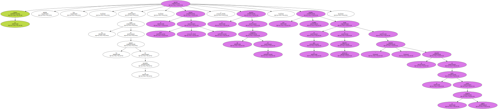Ésta es la primera vez que la mayoría que sustenta al Ejecutivo pierde una votación en el Parlamento después de que Ibarretxe suspendiera el pacto de legislatura con EH tras la reacción de esta coalición al último atentado.
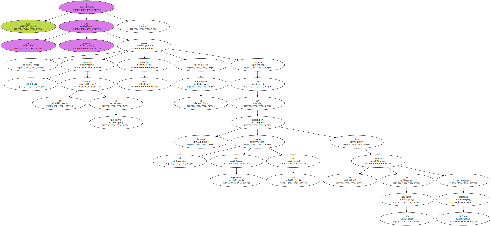El lehendakari , durante sus intervenciones , fue muy crítico con socialistas y populares , especialmente con estos últimos , a los que acusó de no haber dado " ni un sólo minuto de oportunidad a la paz " , y a los primeros les retó a que presenten una moción de censura contra él si consideran que no cuenta con el apoyo suficiente en el Parlamento tras la suspensión del pacto con EH.

Dijo que el PP se comporta de forma " desleal " e insistió en que " no tienen derecho a desprestigiar " a este país al " impulsar y organizar un acto " y " ofrecer tribunas a foros que van diciendo que una parte importante de la población ( los nacionalistas ) somos totalitarios y nazis " , porque están " insultando y ensuciando la conciencia de muchos ciudadanos vascos ".
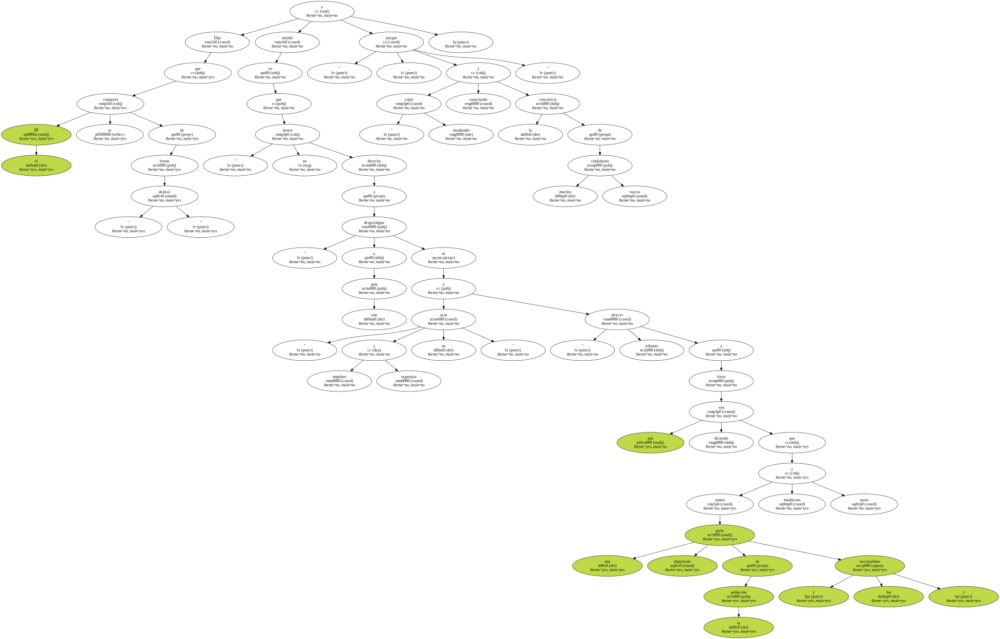El portavoz del PP vasco , Leopoldo Barreda , que dijo que quien presentó dicha denuncia no fue su partido sino el Foro de Ermua , se refirió a la suspensión del pacto con EH y preguntó al lehendakari si " tiene permiso para romper " definitivamente con esta coalición , porque con su actitud ha dejado " en sus manos ( de EH ) su continuidad ".
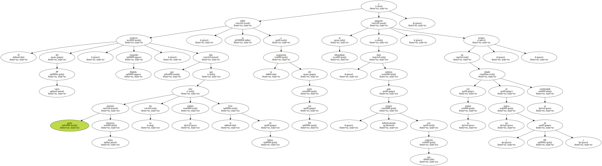El lehendakari recordó que el pacto de legislatura con EH sigue en suspenso , y " un pacto sin vigencia no tiene existencia " , y auguró que seguirá así mientras EH no demuestre " con actitudes que apuesta inequívocamente por las vías políticas y democráticas exclusivamente " , por encima de documentos o manifestaciones públicas.
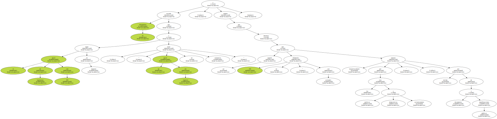Ibarretxe añadió que si EH cumple esta premisa el pacto será " válido " y un " activo " para la pacificación y que si no la cumple el Gobierno Vasco buscará los apoyos de otros grupos para sacar adelante sus iniciativas en la Cámara.
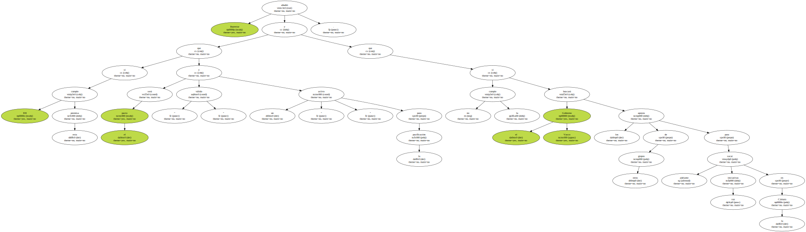El portavoz del PSE-EE , Fernando Buesa , anunció al lehendakari que " no espere nuestro apoyo " en esta estrategia de " mantenerse en el cargo teniendo o no viabilidad " su proyecto , por lo que le preguntó si tiene intención de someterse a una cuestión de confianza , ya que fue investido lehendakari con los votos del PNV , EA y EH.
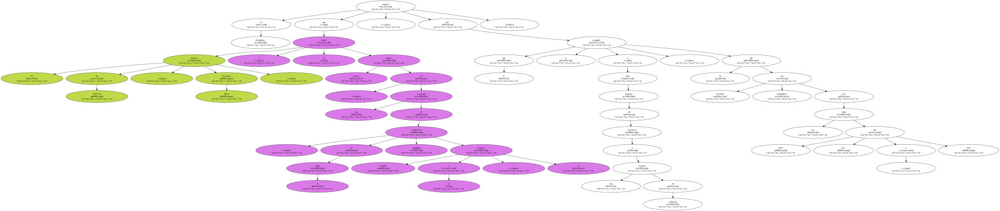Ibarretxe retó a los socialistas a que presenten una moción de censura , que reglamentariamente debe llevar consigo la presentación de un candidato alternativo.
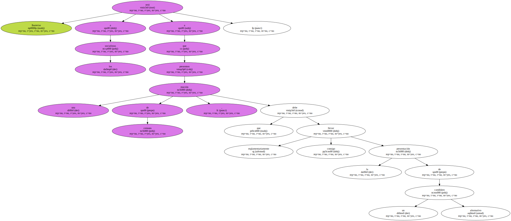El lehendakari , a preguntas del secretario general de UA , Pablo Mosquera , se mostró convencido de que en EH hay un " importante sector que está en contra de ETA y de la violencia callejera " y de que lo que deben hacer el resto de partidos es apoyar a aquellos que " quieren que las cosas cambien , que son muchos ".
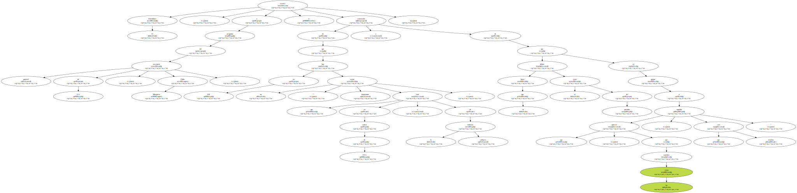Por último , animó a la sociedad vasca a que se " movilice activamente " y participe en las próximas elecciones generales , porque vive un momento en el que " tiene que hablar y no callar " , en referencia a la propuesta de abstención de EH.
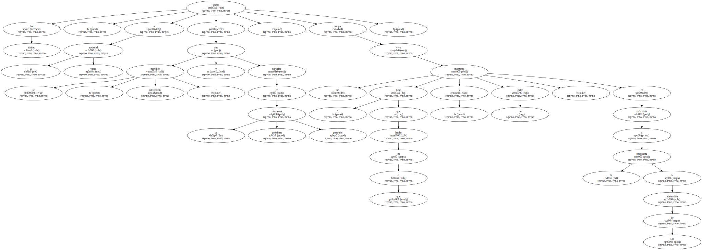